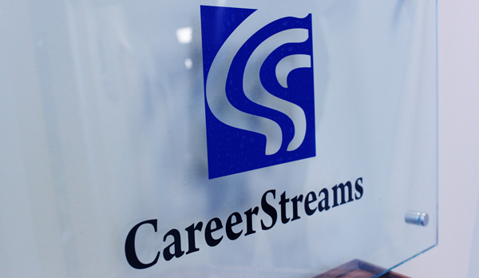

News
What's New At CareerStreams.
We Are Biz of the Month in BizX Magazine.

CareerStreams: Putting Clients In Touch With Their Personal Potential.
Taking its cue from its growing client base, Windsor's CareerStreams counselling service recently entered an "expansion phase" after 15 years in business by asking itself the same question it hears from clients: "Where do I go from here?"
Read The Full Article Here